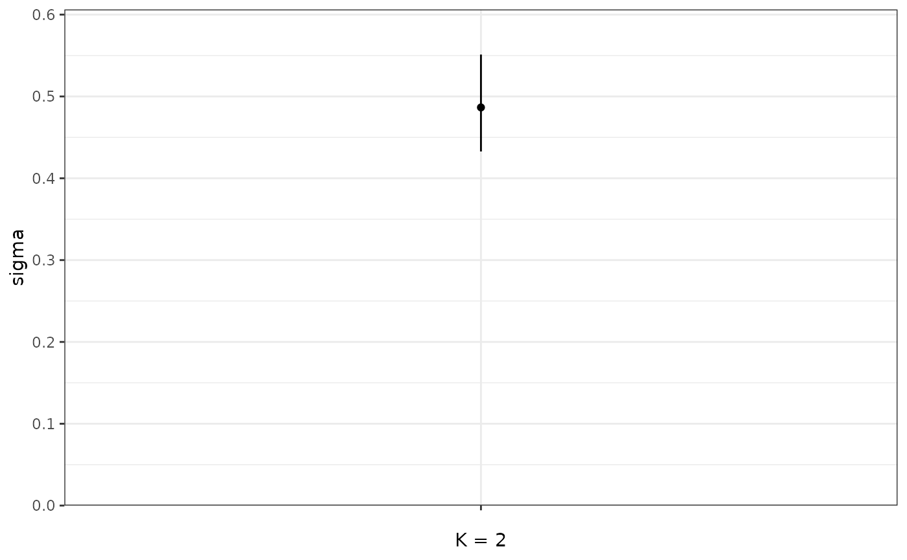

vignettes/PointPattern-basic-implementation.Rmd
PointPattern-basic-implementation.RmdThe following tutorial will introduce the user to the general structure required to run silverblaze when analysing point pattern data. The protocol of silverblaze is to create one fundamental object, referred to in these tutorials as p, that describes the entire project. The structure of p consists of:
Following this, the user will learn how to plot and diagnose the output of the model.
We start by defining area over which we are simulating our data.
We can generate our data from a given model using sim_data().
mysim <- sim_data(data_type = "point-pattern", K = 2, dispersal_model = "normal", sigma_model = "single", sigma_mean = 0.5, sigma_var = 0, N = 150, source_lon_min = lon_range[1], source_lon_max = lon_range[2], source_lat_min = lat_range[1], source_lat_max = lat_range[2]) true_source <- mysim$record$true_source
These parameters describe the underlying behaviour of the data in question:
data_type is the data we wish to generate, in this case, point-pattern.K is the number of sources with which individuals are spatially based.dispersal_model tells us which dispersal kernel to use to generate the data.sigma_model defines homogeneity or independence of dispersal across sources.sigma_mean and sigma_var govern the dispersal associated with each source. Set sigma_var = 0 to set an explicit dispersal via sigma_mean.N tells us how many individuals we there are over our search area.Let’s view our point-pattern data.
head(mysim$data)
## longitude latitude
## 1 -0.10161279 51.49437
## 2 -0.10610024 51.49748
## 3 -0.08750745 51.49508
## 4 -0.09422283 51.49315
## 5 -0.10011266 51.49871
## 6 -0.09335569 51.49308Here we see the general structure of the data required to run the finite mixture model. That is, a collection of points in decimal longitude and latitude formate. This mysim$data object is the only piece of information required for the user to run the model. All other output from mysim$data is merely a consequence of simulating the data in the first place.
We initialise a blank project p using the rgeoprofile_project() function.
p <- rgeoprofile_project()
We then add in our simulated data using bind_data().
p <- bind_data(p, df = mysim$data, data_type = "point-pattern")
We wish to impose a spatial prior on our model. Here we implement a very simple one by instructing the model to restrict the area of interest to to that which contains our points plus some guard_rail. We can produce a uniform spatial prior with raster_grid().
uniform_prior <- raster_grid(range_lon = c(-0.2, 0), range_lat = c(51.45, 51.55), cells_lon = 100, cells_lat = 100, guard_rail = 0.1)
Next we define the various priors on the variables we wish to estimate when running the model. We define these parameters via new_set(). Notice the project p is one of the function’s arguments. This is such that the parameter set we define is added into our project.
p <- new_set(project = p, spatial_prior = uniform_prior, dispersal_model = "normal", sigma_model = "single", sigma_prior_mean = 0.5, sigma_prior_sd = 2, name = "Tutorial Parameters") p
## DATA:
## type: point-pattern
## total observations = 150
##
## PARAMETER SETS:
## * SET1: Tutorial Parameters
##
## ACTIVE SET: SET1
## dispersal/decay kernel = normal
## spatial prior:
## longitude range = [-0.21, 0.01]
## latitude range = [51.445, 51.555]
## area (km^2) = 185.816
## cells = 100, 100 (lon, lat)
## sigma prior:
## model = single
## prior mean = 0.5
## prior SD = 2The project p is now taking shape as we have defined the data and parameters for the model. Each time the new_set() function is run it will add a new set of parameters to p$parameters_sets and will regard this new set as the active_set. To delete an old parameter set, we use delete_set(). The "output" object within p is empty right now, but will be populated once the model has run.
We are now ready to run the MCMC algorithm on our data. The arguments in run_mcmc() are similar to many other MCMC implementations. The algorithm will start in the burn-in phase, checking for convergence at each convergence_test iterations and move into the sample phase once the conditions for convergence have been met or the number of burn-in iterations has been reached. The argument K governs how many sources the model should search for. Although we simulated the data, and know the true underlying number of sources, this will rarely be the case with a real-world data set. Hence K can take a single value or a sequence of values. We choose 1:5 as our data was generated with three sources. The pb_markdown = TRUE argument ensures a neater version of the console output is printed below, this should be removed when run by you.
K_model <- 1:5 beta_list <- list() n_rungs <- rep(NA, length(K_model)) for(i in K_model){ beta_k <- silverblaze::: optimise_beta(proj = p, K = i, create_maps = FALSE, target_acceptance = 0.5, max_iterations = 20, beta_init = seq(0, 1, l = 5), silent = FALSE, burnin = 1e1, samples = 10, converge_test = 1e1, coupling_on = TRUE, pb_markdown = FALSE) beta_list[[i]] <- beta_k$beta_vec[length(beta_k$beta_vec)] n_rungs[i] <- length(unlist(beta_list[[i]])) } #------------------------------------------------------------------ # RUN MCMC for(i in K_model){ beta_vals <- unlist(beta_list[[i]]) p <- run_mcmc(project = p, K = i, rungs = length(beta_list[[i]]), coupling_on = TRUE, burnin = 5e3, samples = 5e3, converge_test = 1000, auto_converge = TRUE, beta_manual = beta_vals, pb_markdown = FALSE) } p <- run_mcmc(project = p, K = 1:5, burnin = 4e4, samples = 1e4, converge_test = 1e4, auto_converge = TRUE, pb_markdown = TRUE)
Before plotting any geoprofiles let’s makes sure the MCMC is indeed mixing well.
Firstly we question the MCMC’s ability by producing diagnostic plots of the log-likelihood. This can be done for each value of K to ensure the algorithm is behaving properly.
plot_loglike_diagnostic(p, K = 2)
Another useful metric for assessing the MCMC is its effective sampling size (ESS). If we have 10,000 sampling iterations but an ESS of 80 then we really only have 80 samples from the posterior, and so we should run it out for longer.
get_ESS(p, K = 2)
## rung1
## 819.3797Now the model has run, we can start to visualise different aspects of the project. Plotting objects in silverblaze follow a similar structure to Leaflet and ggplot2. We start with a base layer
plot1 <- plot_map()
and overlay different parts of our project using the set of overlay functions. Lets start with the underlying sources locations and our spatial prior.
plot2 <- overlay_spatial_prior(plot1, p, col = "red", opacity = 0.2) plot2 <- overlay_sources(plot2, true_source$longitude, true_source$latitude) plot2
This isn’t too interesting yet, so let’s add to this the point-pattern data.
plot3 <- overlay_points(plot2, lon = mysim$data$longitude, lat = mysim$data$latitude, col = "purple") plot3
Finally, we add in the geoprofile produced by running the MCMC.
plot4 <- overlay_geoprofile(plot3, project = p, threshold = 0.1, opacity = 0.8, K = 3, col = plasma, legend = TRUE) plot4
We can also plot the posterior 95% credible intervals of each sigma. The "single" model will produce a sinle interval. Note the true value of 0.5 km.
plot_sigma(p, K = 2)

The model-testing metric used consistently through the geographic profiling literature is the hitscore. This is calculated by computing the area searched before finding a source divided by the total search area (where a search is defined by starting at the top of the geoprofile and working your way down). Hence a lower hitscore indicates a better performing model. We use get_hitscores to produce these.
hs <- get_hitscores(p, true_source$longitude, true_source$latitude, ring_search = FALSE) hs
## longitude latitude hs_geoprofile_K1 hs_geoprofile_K2 hs_geoprofile_K3
## 1 -0.09850436 51.49269 8.60 0.01 0.00
## 2 -0.13864630 51.51931 5.23 0.04 0.03
## hs_geoprofile_K4 hs_geoprofile_K5
## 1 0.32 0.57
## 2 0.02 2.44Another common metric to use for this analysis is a gini coefficent from a Lorenz plot.
plot_lorenz(hs)
This plot_lorenz() function returns a graph that describes the number of sources found as a function of area searched. The Gini co-efficent is then calculated as the area under these piecewise curves.
gini(hs)
## hs_geoprofile_K1 hs_geoprofile_K2 hs_geoprofile_K3 hs_geoprofile_K4
## 0.90470 0.99970 0.99985 0.99820
## hs_geoprofile_K5
## 0.98210Both the gini() and get_hitscores() functions refer to a “ringsearch” strategy. This is used to compare the model to a naive search strategy that requires you to search radially outwards from each positive sentinel site until sources are found. This gives us a bottom line non-trivial search strategy to compare hitscores to.